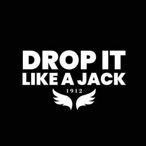
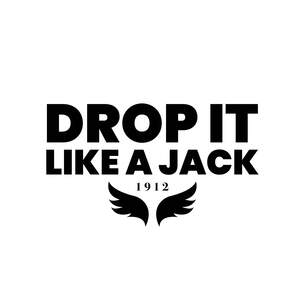

Trade Mark Journal No.2025/049 5 December 2025
UK00004300398 25 November 2025 (9,14,16,18,21,24,25,33,35)
Mark 1

Mark 2

- Class 9
- Downloadable downloadable prints; digital files for printing (images, artwork, designs); fridge magnet, mobile phone case; mouse Matt; .
- Class 14
- Metal Keyrings; lanyards; decorative pins; jewelry; cufflinks; key fobs metal and leather; charms for key rings; .
- Class 16
- Stickers; adhesive stickers; bumper stickers; art prints; canvas prints; digital printing paper; photographic prints; print letters; place matt; greeting cards; printed cards; cards; .
- Class 18
- Bags; rucksacks; backpacks; wallets; purses; card holders, umbrellas, tote bags; roll top backpack; duffle bag; toiletry bag; .
- Class 21
- Cups and mugs; ceramic mugs; travel mugs; teapots; coasters; insulated bottles; souvenir plates; Plastic cups; sippy cups; water bottles; aluminum water bottles (empty); chopping board; ceramic ornaments; insulated lunch bags.
- Class 24
- Towels; tea towels ; blankets; cushion covers; throws, bed covers; canvas,.
- Class 25
- Clothing; footwear; headwear; sportswear; tracksuits; jerseys; outerwear; T-shirts; hoodies; snood, neck scarves; pyjamas; beanies; bucket hats; shorts; joggers; socks; tank tops; jackets; sweatshirts; gloves; socks; scarfs; .
- Class 33
- Alcoholic beverages (except beer); Gin; Whiskey; Spirits; .
- Class 35
- Retail services and online retail store services in relation to with the sale of: clothing and apparel, scarves, hats, hoodies, t-shirts, sweatshirts, beanies, bucket hats, jackets, sportswear, casual wear, tracksuits, socks, gloves, mugs, keyrings, aprons, gin, whiskey, aprons, tea towels, keyrings, ceramic mugs, water bottles, canvas, travel mugs, scarfs, chopping boards, fridge magnets, adhesive stickers, insulated lunch bags, duffle bags, roll top bags, rucksacks, ceramic ornaments, greeting cards, digital downloads, wallets, umbrellas, sippy cups, tote bags, mouse matt, place matt, candles with wick, scented candles, candles in tin, phone case, cushions, tea towels, towels, bed covers, blankets, coasters, cups, mugs, teapots, keyrings, key fobs, wallets, charms for keyrings, souvenir plates, art prints, cufflinks, toiletry bags .
Jane Louise Purewall in the PureAvalon Partnership
Prabhjot Purewall